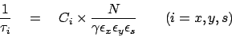
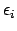
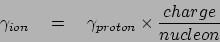
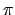

As emphasized by its name, the Intra-Beam Scattering module (IBS) computes the
contribution to emittance growth rates due to Coulomb scattering of particles
within relativistic beams.
The formalism used in this module is that derived by J.D. Bjorken and
S.K.Mtingwa [Bjorken and Mtingwa] in 1982,
using the expansion of M. Conte and M. Martini [Conte and Martini] in 1985,
generalized to the case of nonzero vertical dispersion.
The IBS module uses the beta and dispersion provided by the TWISS command.
The IBS module does not include a consistent treatment of linear betatron coupling.
The present implementation of the IBS module in MAD-X is described in a forthcoming note
[Antoniou and Zimmermann] (2012).
Contrary to other IBS-routines, the Bjorken-Mtingwa formalism takes into
account the variation of the lattice parameters around the machine, rather than using average values. Consequently, the knowledge of the optical functions of the machine is required. In MAD-X, this is achieved with the ``twiss'' command.
It is well known that the intra-beam scattering growth times behave like:

where C accounts for some constants and the integrals for the scattering functions, N is the number of particles in the bunch, is the relativistic factor and  are the normalized emittances in the horizontal, vertical and longitudinal plane respectively.
It thus follows that the second required input is a description of the beam parameters, which is achieved via the ``beam'' command (see below).
Once the optical functions and the beam parameters have been defined, the evaluation of the scattering growth times follows via the ``ibs'' command.
The ``ibs'' command should be immediately preceded by a call of ``twiss''.
In particular, the ``emit'' command should be followed by another call of ``twiss'' before ``ibs'' is used.
If ``twiss'' calculates the optical functions at the end of each element ``ibs'' performs a linear extrapolation to determine their values
at the center of the elements. If ``twiss'' already computes the optical functions at the center of each element ``ibs'' uses these
values directly without making any interpolation.
The logical follow-up of the MAD-X commands is illustrated in the two examples provided with the IBS-module.
This section briefly describes the parameters which have to be present in the
``beam'' command in order to run the IBS-module:
The parameter ``particle='' is mandatory. It can take one of the following three values: proton, electron or ion.
For proton and electron, the parameter ``particle'' is the only one to be defined.
In case ion is used, two additional parameters have to be
defined, namely ``mass='', which is typically the number of
nucleons for the corresponding ion multiplied by nmass the unified atomic
mass unit [0.931494013 GeV/(c**2)] , and ``charge='' for the number of charges.
The definition of the energy (total, kinetic, total energy of the ions or energy per nucleon) is a difficult one.
In the present approach, the energy is the total energy of the
particle. For ions, the expected input is the proton equivalent
energy, i.e. the total energy a proton would have when circulating in
the defined machine. As an illustration, in the LHC, protons will be
injected with an energy of 450 GeV. Consequently, to evaluate the
growth times for Lead ions at injection in the LHC, one has to input
energy=450*charge. Therefore the above example of Lead at the
LHC injection energy may look as follows in the MAD-X input language:
nucleon=208;
charge=82;
beam,particle=ion,charge=charge,energy=450*charge,mass=nucleon*nmass;
An important check for the correctness of the input is the printed value of the relativistic factor . The latter should correspond to:

The number of particles (or number of ions) is defined with the parameter
``npart=''.
This part of the input is used to define the normalized emittances (horizontal, vertical and longitudinal). The required parameters are the physical transverse emittances (ex= and ey= [m]), the longitudinal emittance (ET=) which is defined
as the product of the bunch length (sigt= [m]) and the relative energy spread (sige=).
If FILE="file_name" appears MAD-X produces a table and writes on a
file for each element of the machine: ELEMENT NAME, Position S [m],
DELS [m] (Length Difference of consecutive Elements in the Table),
TLI (Longitudinal growth time), TXI (Horizontal growth time), TYI (Vertical growth time),
BETX [m], ALFX [1], DX [m], DPX [1], BETY [m], ALFY [1], DY [m], DPY [1]